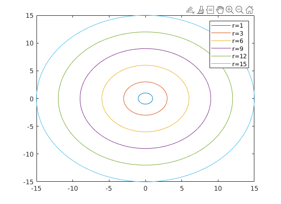

Assignment 2 - Dimitar Dimitrov - s1018291
2.3 hypotenuses
a = [1:5]; % initialize array of first leg b = [1:5]; % initialize array of second leg for i = 1:5 a(i) = input(['enter number a', int2str(i),' :']); % acquire values for first leg b(i) = input(['enter number b', int2str(i),' :']); % acquire values for second leg end hyp = zeros(5,5); % initialize matrix of hypotenuses % for each combination of 2 legs calculate the hypotenuse for i = 1:5 for j = 1:5 hyp(i,j) = sqrt(a(i)^2 + b(j)^2); end end disp(hyp);
2.3 radii
r=[1 3:3:15]; rho=[0:0.01:2*pi]; for i = 1:length(r) x = r(i)*cos(rho); y = r(i)*sin(rho); curr_legend = strcat("r=",int2str(r(i))); plot(x,y, 'DisplayName', curr_legend ); hold on; end legend; hold off;
2.4 Guess the number game
Pickme = round(10 + 10*rand(1)); % old picker changed to number between 10 and 20 Picker = round(100*rand(1)); % randomly pick number between 0 and 100 NrGuesses = 0; % initialize guess counter Guessedcorrectly = 0; % initialize correct guess boolean nrplayers = 5; % initialize number of players while (Guessedcorrectly == 0 && NrGuesses <10) % repeat until either a correct guess or number of rounds == 10 guesses = zeros(nrplayers); % initialize guess array % acquire every player's guess for i = 1:nrplayers guesses(i) = input(['Player ',int2str(i),' take your guess: ']); end % identify correct guesses correct = find(guesses == Picker); % if nobody guessed correctly if isempty(correct) % increment the round number NrGuesses = NrGuesses +1; % if 10 rounds are reached terminate game if NrGuesses == 10 disp('GAME OVER, everybody guessed wrong 10 times!'); else % else announce everyone's failure disp([int2str(NrGuesses), ' times everybody guessed Wrong']); end else % if somebody guessed correctly, terminate game Guessedcorrectly = 1; % announce winners for i = 1:length(correct) disp(['Player ', int2str(correct(i)),' guessed the number!']); end % show the number disp(['the number was ', int2str(Picker)]); end % if the game has been terminated ask if they want a new game if Guessedcorrectly == 1 || NrGuesses == 10 NewGame = input('Do you want to play again? y/n ', 's'); % if they do, reset all variables if NewGame == 'y' NrGuesses = 0; Guessedcorrectly = 0; Picker = round(100*rand(1)); else disp('goodbye!') end end end
2.6 celsius to fahrenheit
function [fahr] = cels2fahr(cels) % function [fahr] = celsius2fahr(cels) % this function converts temperature % from celsius to fahrenheit % returns the same type as input (number/vector/matrix) fahr = cels * (9/5) + 32;
2.6 fahrenheit to celsius
function [cels] = fahr2cels(fahr) % function [cels] = celsius2fahr(fahr) % this function converts temperature % from fahrenheit to celsius % returns the same type as input (number/vector/matrix) cels = (fahr - 32) * (5/9);
2.6 prices Vat calculator
function [total, priceVAT] = priceInclVAT(price, vat) % function [priceVAT] = priceInclVAT(price, vat) % this function calculates the price % with vat given the price without vat % and the vat in percent total = price' + price'.*(vat./100); priceVAT = price'.*(vat./100);
2.6 hit the ground
function [time, velocity, h_half] = hitGround(height, g) % function [time] = hitGround(height) % function that takes the height from which % an object is dropped (in vacuum) and the % acceleration of the gravity (in m/s^2) % and returns: % 'time' - the time it takes for it to hit the ground % 'velocity' - the velocity at time of collision % 'h_half' - the distance it has covered when half of the % time to collision has elapsed time = sqrt(height./g); velocity = time.*g; h_half = 0.5*g*(time.*time/4);
2.6 remove outliers
function [Y] = removeOutliers(X, nr_stds) % function [Y] = removeOutliers(X); % removes outliers from an array X % returns new array Y without outliers % an outlier is defined as an element % that sits 'nr_stds' standard % deviations away from the data mean x_mean = mean(X); x_std = std(X); Y = X(abs(X-x_mean)/x_std < nr_stds);
2.9 function stats
function [means,maximums,minimums,standard_deviations] = functionStats(x,y) % function [means,maximums,minimums,standard_deviations] = functionStats(x,y) % a function that takes two vectors x and y of same size % or a vector x and a matrix y, which has rows equal to size of vector x and % multiple columns % plots vector y (or columns of matrix y) as a function of vector x % returns the means, maximums, minimums and standard_deviations of vector x % and vector y (or columns of matrix y) if size(x) == size(y) plot(x,y, '-or'); else plot(x,y, '-o'); end means = [mean(x) mean(y)]; maximums = [max(x) max(y)]; minimums = [min(x) min(y)]; standard_deviations = [std(x) std(y)];